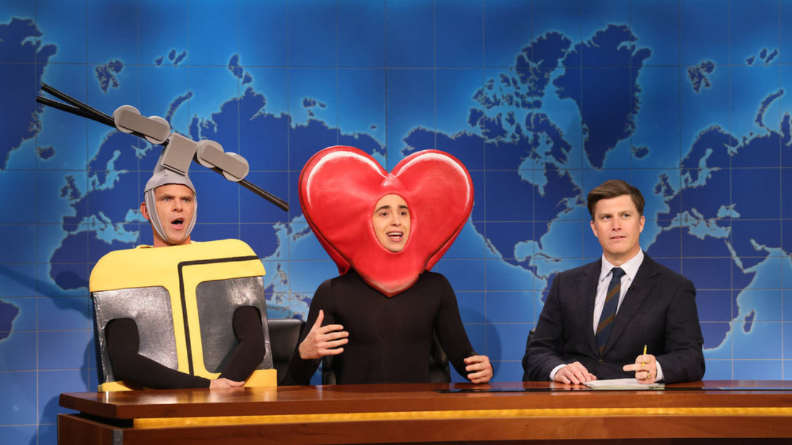
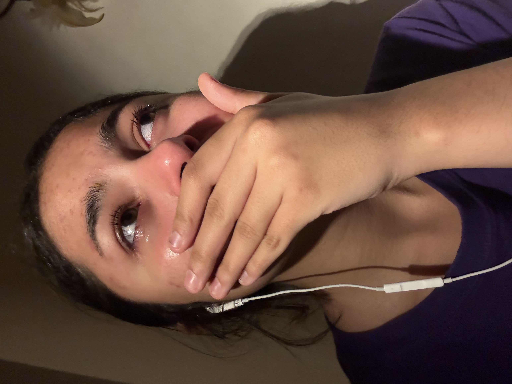
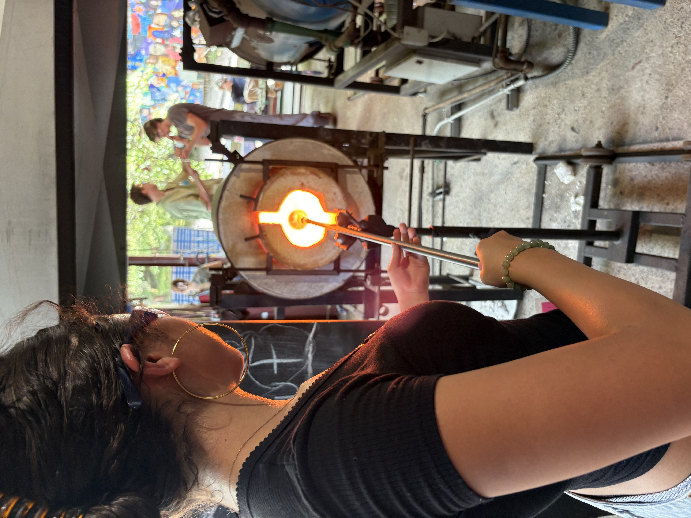

Dallas Cowboys Cheerleader!
I love the DCC because... I think that there is something incredibly empowering about multi-faceted and successful woman, who work their hardest to cheer OTHER people on. They are the whole package: Beautiful, talented, graceful, kind, and hardworking. They are the perfect role models for people my age.Reese is my fav cheerleader, and she is in Chicago on Broadway right now!
SNL!
I'm a huge fan of SNL, which is one of the most millenial things about me. I grew up watching it with my dad as a kid, and now its incorperated into every Saturday of my life (when the show is in season - which it is right now!)

This is a photo of one of my fav SNL skits from last season. And last week, I cried bc/ the SNL theme song played, and I got emotional.
Mermaids!
I have always been a huge fan of mermaids because... it remind me of my childhood, I love swimming, I love the ocean, and I love magic. I actually own a personal mermaid tale. And, when I was a kid, my love for mermaids inspired me to want to become a marine bioligist or an ocean actvist.

These are some baby photos of me as a mermaid. The pink tale was actually my first mermaid tale. I now own a green tale.
Glassblowing!
One of my favorite things to do is blow glass. Over the summer, I go to a performing and visual arts camp. Of course, I mostly focus on performing arts, but my favorite visual art is glass blowing. I find it very calming and it's a great way for me to meditate. Unfortunatly, it's very inaccessible in NYC, but during the summer I make lots of cool things in the "glory hole."

This is me making a glass cup in what's called "The Glory Hole." The other photo is a gift I made for my Secret Santa at camp - A Lucky Charms Cup.
My Sword Necklace!
I wear my Sword Necklace everyday because... I believe it gives me protection, strength, and confidence. You'll hardly ever see me without it. From a distance, my usdie down sword looks like a religious cross. I like how the first impression of my necklace is usually wrong, just like people's first impressions of me. The sword has been rusted, lost for months at a time, ank broken. But the necklace has always found it's way back to me through every adversity in my adolescent life.

Here is a during feshamn vs. senior photo of me and my necklace.